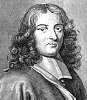

Philosophy Pages
| Dictionary | Study Guide | Logic | F A Q s | ||
|---|---|---|---|---|---|---|
| History | Timeline | Philosophers | Locke | |||
| Philosophy Pages
| Dictionary | Study Guide | Logic | F A Q s | ||
|---|---|---|---|---|---|---|
| History | Timeline | Philosophers | Locke | |||
Locke's influence extended through several generations of British moral philosophers, who not only developed and criticized his notion of a demonstrable morality but also worked within the general framework of his empiricist epistemology.
Samuel Clarke followed up on Locke's sketchy hints about the demonstrability of morals by proposing extended proofs of the golden rule as a purely rational statement of the natural distinction between good and evil.
In a series of anonymous publications, Catherine Cockburn supported this rationalistic account of moral obligation in opposition to the emerging emphasis on self-interest moderated by external sanctions as the sole sources of moral motivation.
John Toland extrapolated from Locke's discussion of god to arrive at the notion of matural religion as a legitimate product of human reason. Toland's Christianity not Mysterious (1696) became a significant source for the later development of English Deism.
Richard Cumberland and Ralph Cudworth had already attempted to show that morality can be grounded as a natural and immutable system arising from our innate, universal feeling of benevolence toward all human beings.
But this position earned the scorn of Bernard Mandeville, who regarded morality as the merely conventional rules of a social group and supposed that all human action is inevitably guided only by self-interest.
The third Earl of Shaftesbury opposed ethical egoism by appealing to what he argued were the natural inclinations of human agents to act rightly.
Francis Hutcheson responded to these challenges by supplementing Locke's account of human faculties. According to Hutcheson, we acquire the ideas of moral and aesthetic value from an separate "moral sense," whose information guides us appropriately toward virtuous action.
In the sermons of Joseph Butler, this concept of a distinct capacity for perceiving good and evil became the more theological notion of a divinely-provided conscience that serves as the infallible guide of human conduct.
The drift of this entire tradition provided a background against which
David Hume was able to employ
the notion of a moral sense to propose a purely naturalistic account of human morality.
|

Bayle Life and Works . . Skepticism Bibliography Internet Sources |
Locke's Dutch friend Pierre Bayle stirred controversy by reviving interest in Pyrrhonian skepticism among French and British philosophers. His voluminous Dictionary provided many opportunities for expostulation on contemporary philosophical issues.
Bayle developed serious questions about the success of modern philosophy. Cartesian rationalism, he supposed, founders because the frailty of our faculties gives us little reason for confidence in divine veracity. The fact that animals evidently do think casts doubt upon the dualistic account of human nature, with its emphasis on our immaterial souls.
Nor will empiricist methods help. Locke's careful distinction between primary and secondary qualities, Bayle argued, cannot be defended, since instances of perceptual illusion arise with respect to both. When the critical arguments are fairly applied, we will be seen to have no reliable information about qualities of either sort. Thus, the use of representationalism in defence of scientific knowledge inevitably drives us even further into skepticism.
Religion and morality may be secured even in the face of such skepticism, the Protestant Bayle supposed, because they depend in no way on the achievements of reason. Moral conduct, like all human behavior, results (in theist and atheist alike) from the irrational influence of emotion, desire, and shame. True religion can be based only on an entirely unreasoned faith.
Although direct influence is difficult to prove, Bayle's skeptical arguments clearly anticipated the direction in which empiricism would develop through the work of Berkeley and Hume.
| History of Philosophy | Philosophical Ethics | ||||||
|---|---|---|---|---|---|---|---|
| Previous | Next | Previous | Next | ||||